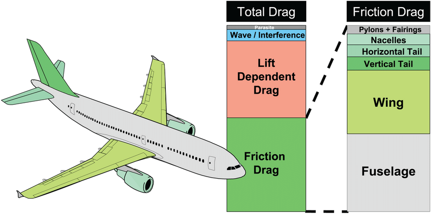

The drag force experienced by an object moving through a fluid is quantified by the drag force equation:
FD = ½ ρ v2 CD A
Where:
The drag force equation is fundamental in both swimming and aerospace. In swimming, reducing drag is critical for improving speed and efficiency. Swimmers achieve this by minimizing their cross-sectional area (A) and adopting streamlined positions to lower the drag coefficient (CD). For example, elite swimmers reduce drag by up to 20% through optimized body alignment and stroke mechanics (Toussaint & Truijens, 2005).
In aerospace, the equation is used to design aircraft that minimize drag at high velocities. For instance, the Concorde’s delta wing design reduced wave drag by 30% at supersonic speeds (NASA, 2008). Engineers also use computational fluid dynamics (CFD) to simulate airflow and optimize designs for lower drag coefficients.
Image source
Research Gate